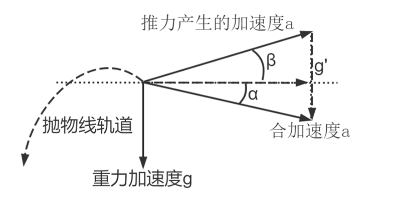
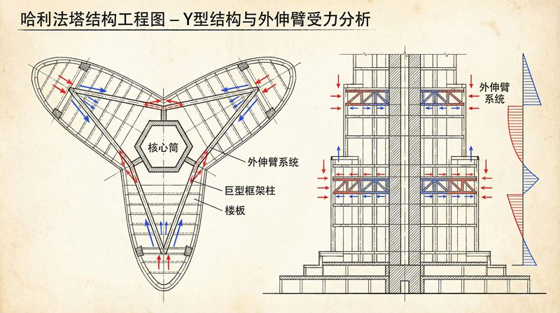

返回课程列表
第一课
绪论
力学是现代科技的基石
⏱️ 约30分钟
从SpaceX的可回收火箭到特斯拉的自动驾驶，从量子计算机到脑机接口——几乎所有前沿科技都离不开理论力学的支撑。
力学驱动的科技革命
每一次重大科技突破都伴随着力学认知的飞跃。牛顿力学催生了工业革命，相对论力学开启了核能时代，量子力学推动了信息革命。

力学与科技里程碑
力学推动的科技进步：
- 航天工程：火箭方程、轨道力学让人类走出地球
- 自动驾驶：运动学模型预测车辆轨迹，动力学模型控制车辆稳定
- 机器人：多体动力学控制机械臂精确运动，步态规划让机器人行走
- 芯片制造：光刻机的纳米级精度需要极致的振动控制
理论力学的现代应用
理论力学不是古老的学科，它在现代科技中焕发新生。有限元分析、多体动力学、计算流体力学——这些现代工具都建立在经典力学之上。

力学的前沿应用
理论力学在前沿科技中的角色：
- SpaceX星舰：使用多体动力学模拟火箭分离和回收过程
- 波士顿动力：Atlas机器人的平衡控制基于倒立摆动力学模型
- ASML光刻机：工件台定位精度达0.1nm，需要极致的力学控制
- 引力波探测：LIGO探测器测量10⁻²¹米的位移，力学精度的极致